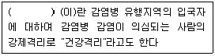

미용사(네일) (2015-10-10 기출문제)
1과목: 공중위생학
1. 일명 도시형, 유입형이라고도 하며 생산층 인구가 전체 인구의 50% 이상이되는 인구 구성의 유형은?
- 별형 (star form)
- 항아리형 (pot form)
- 농촌형 (guitar form)
- 종형 (bell form)
(정답률: 71%)

2. 다음 중 식물에게 가장 피해를 많이 줄 수 있는 기체는?
- 일산화탄소
- 이산화탄소
- 탄화수소
- 이산화황
(정답률: 64%)
3. 다음 감염병 중 호흡기계 전염병에 속하는 것은?
- 발진티푸스
- 파라티푸스
- 디프테리아
- 황열
(정답률: 58%)
4. 사회보장의 종류에 따른 내용의 연결이 옳은 것은?
- 사회보험 - 기초생활보장, 의료보장
- 사회보험 - 소득보장, 의료보장
- 공적부조 - 기초생활보장, 보건의료서비스
- 공적부조 - 의료보장, 사회복지서비스
(정답률: 56%)
5. ( )안에 들어갈 알맞은 것은?

- 검역
- 감금
- 감시
- 전파예방
(정답률: 91%)
6. 감염병을 옮기는 질병과 그 매개곤충을 연결한 것으로 옳은 것은?
- 말라리아 - 진드기
- 발진티푸스 - 모기
- 양충병(쯔쯔가무시) - 진드기
- 일본뇌염 - 체체파리
(정답률: 82%)
7. 영양소의 3대 작용으로 틀린 것은?
- 신체의 생리기능 조절
- 에너지 열량 감소
- 신체의 조직 구성
- 열량공급 작용
(정답률: 75%)
8. 다음 소독 방법 중 완전 멸균으로 가장 빠르고 효과적인 방법은?
- 유통증기법
- 간헐살균법
- 고압증기법
- 건열소독
(정답률: 82%)
9. 인체에 질병을 일으키는 병원체 중 대체로 살아있는 세포에서만 증식하고 크기가 가장 작아 전자현미경으로만 관찰할 수 있는 것은
- 구균
- 간균
- 바이러스
- 원생동물
(정답률: 89%)
10. 이·미용업소 쓰레기통, 하수구 소독으로 효과적인 것은?
- 역성비누액, 승홍수
- 승홍수, 포르말린수
- 생석회, 석회유
- 역성비누액, 생석회
(정답률: 69%)
11. 이·미용업소에서 공기 중 비말전염으로 가장 쉽게 옮겨질 수 있는 감염병은?
- 인플루엔자
- 대장균
- 뇌염
- 장티푸스
(정답률: 82%)
12. 소독약의 살균력 지표로 가장 많이 이용되는 것은?
- 알코올
- 크레졸
- 석탄산
- 포름알데히
(정답률: 47%)
13. 다음 중 아포(포자)까지도 사멸시킬 수 있는 멸균 방법은?
- 자외선조사법
- 고압증기멸균법
- P.O. (Propylene Oxide) 가스 멸균법
- 자비소독법
(정답률: 79%)
14. 소독제의 구비조건과 가장 거리가 먼 것은?
- 높은 살균력을 가질 것
- 인축에 해가 없어야 할 것
- 저렴하고 구입과 사용이 간편할 것
- 냄새가 강할 것
(정답률: 91%)
2과목: 피부학
15. 여드름을 유발하는 호르몬은?
- 인슐린 (insulin)
- 안드로겐 (androgen)
- 에스트로겐 (estrogen)
- 티록신 (thyroxine)
(정답률: 62%)
16. 멜라닌 세포가 주로 위치하는 곳은?
- 각질층
- 기저층
- 유극층
- 망상층
(정답률: 80%)
17. 피지, 각질세포, 박테리아가 서로 엉겨서 모공이 막힌 상태를 무엇이라 하는가?
- 구진
- 면포
- 반점
- 결절
(정답률: 70%)
18. 사춘기 이후 성호르몬의 영향을 받아 분비되기 시작하는 땀샘으로 체취선이라고 하는 것은?
- 소한선
- 대한선
- 갑상선
- 피지선
(정답률: 70%)
19. 일광화상의 주된 원인이 되는 자외선은?
- UV-A
- UV-B
- UV-C
- 가시광선
(정답률: 57%)
20. 다음 중 뼈와 치아의 주성분이며, 결핍되면 혈액의 응고현상이 나타나는 영양소는?
- 인(P)
- 요오드(I)
- 칼슘(Ca)
- 철분(Fe)
(정답률: 76%)
21. 노화 피부에 대한 전형적인 증세는?
- 피지가 과다 분비되어 번들거린다.
- 항상 촉촉하고 매끈하다
- 수분이 80% 이상이다
- 유분과 수분이 부족하다
(정답률: 92%)
3과목: 공중위생법규
22. 공중위생관리법상 이·미용 기구의 소독기준 및 방법으로 틀린 것은?
- 건열멸균소독 : 섭씨 100℃ 이상의 건조한 열에 10분 이상 쐬어준다
- 증기소독 : 섭씨 100℃ 이상의 습한 열에 20분 이상 쐬어준다
- 열탕소독 : 섭씨 100℃ 이상의 물속에 10분 이상 끓여준다
- 석탄산수소독 : 석탄산수 (석탄산 3%, 물 97%의 수용액)에 10분 이상 담가둔다
(정답률: 57%)
23. 공중위생업자가 매년 받아야 하는 위생교육 시간은?
- 5시간
- 4시간
- 3시간
- 2시간
(정답률: 74%)
24. 면허의 정지명령을 받은 자가 반납한 면허증은 정지기간 동안 누가 보관하는가?
- 관할 시 · 도지사
- 관할 시장 · 군수 · 구청장
- 보건복지부장관
- 관할 경찰서장
(정답률: 84%)
25. 과태료의 부과 · 징수 절차에 관한 설명으로 틀린 것은?
- 시장 · 군수 · 구청장이 부과 · 징수한다
- 과태료 처분의 고지를 받은 날 부터 30일 이내에 이의를 제기할 수 있다
- 과태료 처분을 받은 자가 이의를 제기한 경우 처분권자는 보건복지부장관에게 이를 통보한다
- 기간 내 이의가 없이 과태료를 납부하지 아니한 때에는 지방세 체납 처분의 예에 따른다
(정답률: 70%)
26. 다음 중 청문의 대상이 아닌 때는?
- 면허취소 처분을 하고자 하는 때
- 면허정지 처분을 하고자 하는 때
- 영업소폐쇄명령의 처분을 하고자 하는 때
- 벌금으로 처벌하고자 하는 때
(정답률: 77%)
27. 신고를 하지 아니하고 영업소의 소재지를 변경한 때에 대한 1차 위반 시 행정처분 기준은?
- 영업장 폐쇄명령
- 영업정지 6월
- 영업정지 3월
- 영업정지 2월
(정답률: 58%)
28. 이·미용업 영업신고 신청 시 필요한 구비서류에 해당하는 것은?
- 이·미용사 자격증 원본
- 면허증 원본
- 호적등본 및 주민증록등본
- 건축물 대장
(정답률: 60%)
4과목: 화장품학
29. 화장수에 대한 설명 중 올바르지 않은 것은?
- 수렴화장수는 아스트린젠트라고 불린다
- 수렴화장수는 지성, 복합성 피부에 효과적으로 사용된다
- 유연화장수는 건성 또는 노화피부에 효과적으로 사용된다
- 유연화장수는 모공을 수축시켜 피부결을 섬세하게 정리해 준다
(정답률: 63%)
30. 아줄렌(Azulene)은 어디에서 얻어지는가?
- 카모마일 (Camomile)
- 로얄젤리 (Royal Jelly)
- 아르니카 (Armica)
- 조류 (Algae)
(정답률: 73%)
31. 향수에 대한 설명으로 옳은 것은?
- 퍼퓸 (perfume extract) - 알코올 70%와 향수원액을 30% 포함하며, 향이 3일 정도 지속된다
- 오드 퍼퓸 (eau de perfume) - 알코올 95%이상, 향수원액 2~3%로 30분 정도 향이 지속된다
- 샤워 코롱 (shower cologne) - 알코올 80%와 물 및 향수원액 15%가 함유된 것으로 5시간 정도 향이 지속된다
- 헤어 토닉 (hair tonic) - 알코올 85~95%와 향수원액 8%가량이 함유된 것으로 향이 2~3시간 정도 지속된다
(정답률: 62%)
32. 린스의 기능으로 틀린 것은?
- 정전기를 방지한다
- 모발 표면을 보호한다
- 자연스러운 광택을 준다
- 세정력이 강하다
(정답률: 91%)
33. 화장품 성분 중 기초화장품이나 메이크업 화장품에 널리 사용되는 고형의 유성성분으로 화학적으로는 고급지방산에 고급알코올이 결합된 에스테르이며, 화장품의 굳기를 증가시켜 주는 원료에 속하는 것은?
- 왁스 (wax)
- 폴리에틸렌글리콜 (polyethylene glycol)
- 피마자유 (caaster oil)
- 바셀린 (vaseline)
(정답률: 71%)
34. 화장품의 4대 요건에 속하지 않는 것은?
- 안전성
- 안정성
- 치유성
- 유효성
(정답률: 89%)
35. 다음 중 미백 기능과 가장 거리가 먼 것은?
- 비타민C
- 코직산
- 캠퍼
- 감초
(정답률: 62%)
5과목: 네일 개론
36. 네일미용의 역사에 대한 설명으로 틀린 것은?
- 최초의 미용네일은 기원전 3000년 경에 이집트에서 시작되었다
- 고대 이집트에서는 헤나를 이용하여 붉은 오렌지색으로 손톱을 물들였다
- 그리스에서는 계란 흰자와 아라비아산 고무나무 수액을 섞어 손톱에 칠하였다.
- 15세기 중국의 명 왕조에서는 흑색과 적색으로 손톱에 칠하여 장식하였다
(정답률: 65%)
37. 손톱의 구조 중 조근에 대한 설명으로 가장 적합한 것은?
- 손톱 모양을 만든다
- 연분홍의 반달모양이다
- 손톱이 자라기 시작하는 곳이다
- 손톱의 수분공급을 담당한다
(정답률: 78%)
38. 네일 샵(shop)의 안전관리를 위한 대처방법으로 가장 적합하지 않은 것은?
- 화학물질을 사용할 때에는 반드시 뚜껑이 있는 용기를 이용한다
- 작업 시 마스크를 착용하여 가루의 흡입을 막는다
- 작업공간에서는 음식물이나 음료, 흡연을 금한다
- 가능하면 스프레이 형태의 화학물질을 사용한다
(정답률: 88%)
39. 손톱의 구조에서 자유연(프리에지) 밑부분의 피부를 무엇이라고 하는가?
- 하조피 (하이포니키움)
- 조구 (네일 그루부)
- 큐티클
- 조상연 (페리오니키움)
(정답률: 80%)
40. 다음 중 손톱의 역할과 가장 거리가 먼 것은?
- 손끝과 발끝을 외부자극으로 부터 보호한다
- 미적 · 장식적 기능이 있다
- 방어와 공격의 기능이 있다
- 분비기능이 있다
(정답률: 86%)
41. 다음 중 손가락의 수지골 뼈의 명칭이 아닌 것은?
- 기절골
- 말절골
- 중절골
- 요골
(정답률: 74%)
42. 다음 중 네일미용 시술이 가능한 경우는?
- 사상균증
- 조갑구만증
- 조갑탈락증
- 행네일
(정답률: 80%)
43. 네일도구의 설명으로 틀린 것은?
- 큐티클 니퍼 : 손톱 위에 거스러미가 생긴 살을 제거할 때 사용한다
- 아크릴릭 브러시 : 아크릴릭 파우더로 볼을 만들어 인조손톱을 만들 때 사용한다
- 클리퍼 : 인조팁을 잘라 길이를 조절할 때 사용한다
- 아클릴릭 폼지 : 팁 없이 아크릴릭 파우더만을 가지고 네일을 연장할 때 사용하는 일종의 받침대 역할을 한다
(정답률: 65%)
44. 손가락과 손가락 사이가 붙지 않고 벌어지게 하는 외향에 작용하는 손등의 근육은?
- 외전근
- 내전근
- 대립근
- 회외근
(정답률: 63%)
45. 네일미용 관리 중 고객관리에 대한 응대로 지켜야 할 사항이 아닌 것은?
- 시술의 우선 순위에 대한 논쟁을 막기 위해서 예약 고객을 우선으로 한다
- 고객이 도착하기 전에는 필요한 물건과 도구를 준비해야 한다
- 관리 중에는 고객과 대화를 나누지 않는다
- 고객에게 소지품과 옷 보관함을 제공하고 바뀌는 일이 없도록 한다
(정답률: 91%)
46. 고객관리에 대한 설명으로 옳은 것은?
- 피부 습진이 있는 고객은 처치를 하면서 서비스한다
- 진한 메이크업을 하고 고객을 응대한다
- 네일제품으로인한 알레르기 반응이 생길 수 있으므로 원인이 되는 제품의 사용을 멈추도록 한다
- 문제성 피부를 지닌 고객에게 주어진 업무수행을 자유롭게 한다
(정답률: 86%)
47. 다음 중 발의 근육에 해당하는 것은?
- 비복근
- 대퇴근
- 장골근
- 족배근
(정답률: 75%)
48. 화학물질로부터 자신과 고객을 보호하는 방법으로 틀린 것은?
- 화학물질은 피부에 닿아도 되기 때문에 신경쓰지 않아도 된다
- 통풍이 잘 되는 작업장에서 작업을 한다
- 공중 스프레이 제품보다 찍어 바르거나 솔로 바르는 제품을 선택한다
- 콘택트 렌즈의 사용을 제한한다
(정답률: 87%)
49. 한국의 네일미용의 역사에 관한 설명 중 틀린 것은?
- 우리나라 네일 장식의 시작은 봉선화 꽃물을 들이는 것이라 할 수 있다
- 한국의 네일 산업이 본격화되지 시작한 것은 1960년대 중반으로 미국과 일본의 영향으로 네일산업이 급성장하면서 대중화되기 시작했다
- 1990년대부터 대중화 되어 왔고 1998년에는 민간자격증이 도입되었다
- 화장품 회사에서 다양한 색상의 팔리시를 판매하면서 일반인들이 네일에 대해 관심을 갖기 시작했다
(정답률: 66%)
50. 네일 질환 중 교조증(오니코파지, Onychophagy)의 원인과 관리방법 중 가장 적합한 것은?
- 유전에 의하여 손톱의 끝이 두껍게 자라는 것이 원인으로 매니큐어나 페디큐어가 증상을 완화시킨다
- 멜라닌 색소가 착색되어 일어나는 증상이 원인이며 손톱이 자라면서 없어지기도 한다
- 손톱을 심하게 물어뜯을 경우 원인이 되며 인조손톱을 붙여서 교정할 수 있다
- 식습관이나 질병에서 비롯된 증상이 원인이며 부드러운 파일을 사용하여 관리한다
(정답률: 85%)
6과목: 네일미용 기술
51. 습식매니큐어 시술에 관한 설명으로 틀린 것은?
- 고객의 취향과 기호에 맞게 손톱 모양을 잡는다
- 자연손톱 파일링 시 한 방향으로 시술한다
- 손톱 질환이 심각할 경우 의사의 진료를 권한다
- 큐티클을 죽은 각질피부이므로 반드시 모두 제거하는 것이 좋다
(정답률: 87%)
52. 폴리시를 바르는 방법 중 손톱이 길고 가늘게 보이도록 하기 위해 양쪽 사이드 부위를 남겨두는 컬러링 방법은?
- 프리에지 (free edge)
- 풀코트 (full coat)
- 슬림 라인 (slim line)
- 루눌라 (lunula)
(정답률: 87%)
53. UV-젤 네일의 설명으로 옳지 않은 것은?
- 젤은 끈끈한 점성을 가지고 있다
- 파우더와 믹스되었을 때 단단해진다
- 네일 리무버로 제거되지 않는다
- 투명도와 광택이 뛰어나다
(정답률: 58%)
54. 아크릴릭 시술 시 바르는 프라이머에 대한 설명으로 틀린 것은?
- 단백질을 화학작용으로 녹여준다
- 아크릴릭 네일이 손톱에 잘 부착되도록 도와 준다
- 피부에 닿으면 화상을 입힐 수 있다
- 충분한 양으로 여러 번 도포해야 한다
(정답률: 70%)
55. 네일 팁 오버레이의 시술과정에 대한 설명으로 틀린 것은?
- 네일 팁 접착 시 자연손톱 길이의 1/2이상 덮지 않느다
- 자연 손톱이 넓은 경우 좁게 보이게 하기 위하여 작은 사이즈의 네일 팁을 붙인다
- 네일 팁의 접착력을 높여주기 위해 자연손톱의 에칭작업을 한다
- 프리프라이머를 자연손톱에만 도포한다
(정답률: 79%)
56. 아크릴릭 네일의 보수 과정에 대한 설명으로 가장 거리가 먼 것은?
- 들뜬 부분의 경계를 파일링 한다
- 아크릴릭 표면이 단단하게 굳은 후에 파일링 한다
- 세로 자라난 자연 손톱 부분에 프라이머를 바른다
- 들뜬 부분에 오일 도포 후 큐티클을 정리한다
(정답률: 70%)
57. 페디파일의 사용 방향으로 가장 적합한 것은?
- 바깥쪽에서 안쪽으로
- 왼쪽에서 오른쪽으로
- 족문 방향으로
- 사선 방향으로
(정답률: 64%)
58. 큐티클을 정리하는 도구의 명칭으로 가장 적합한 것은?
- 핑거볼
- 니퍼
- 핀셋
- 클리퍼
(정답률: 88%)
59. 페디큐어의 시술방법으로 맞는 것은?
- 파고드는 발톱의 예방을 위하여 발톱의 모양(shape)은 일자형으로 한다
- 혈압이 높거나 심장병이 있는 고객은 마사지를 더 강하게 해 준다
- 모든 각질 제거에는 콘커터를 사용하여 완벽하게 제거한다
- 발톱의 모양은 무조건 고객이 원하는 형태로 잡아준다
(정답률: 84%)
60. 네일 팁에 대한 설명으로 틀린 것은?
- 네일 팁 접착 시 손톱의 1/2 이상 커버해서는 안된다
- 네일 팁은 손톱의 크기에 너무 크거나 작지 않은 가장 잘 맞는 사이즈의 팁을 사용한다
- 웰 부분의 형태에 따라 풀 웰(full well)과 하프 웰(half well)이 있다.
- 자연 손톱이 크고 납작한 경우 커브타입의 팁이 좋다
(정답률: 66%)